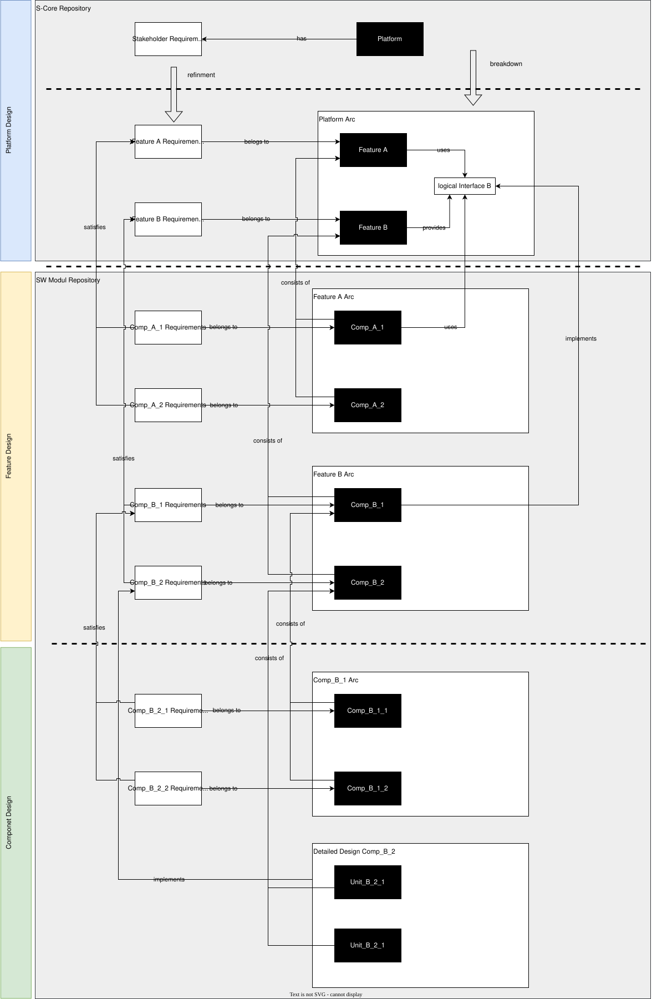
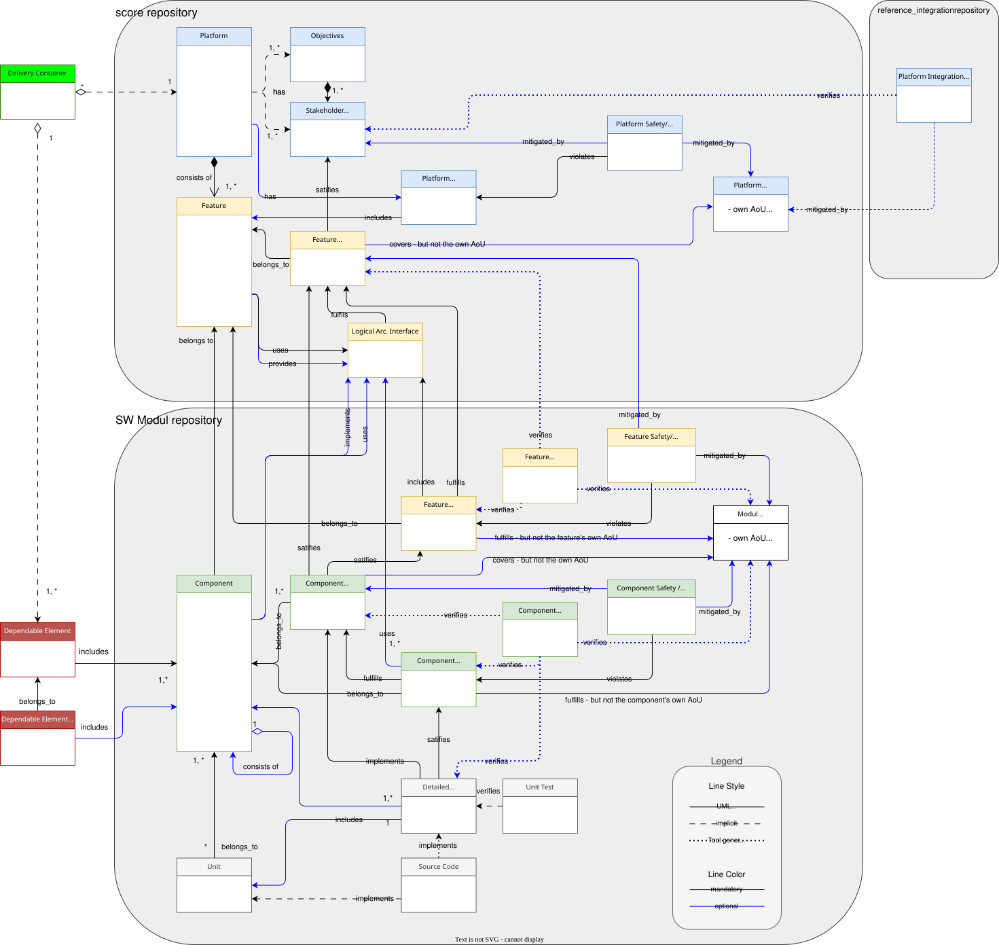
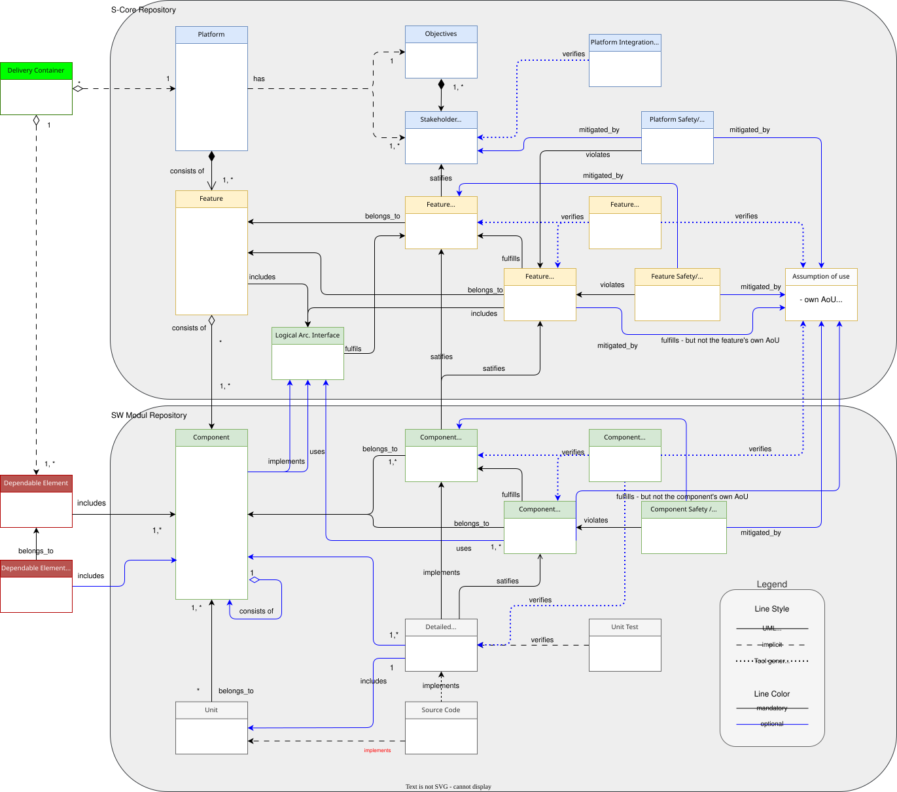

DR-001-Proc: Feature as Independent Delivery Product#
Feature as Independent Delivery Product
|
status: accepted
|
||||
|
|||||
Context#
The intent of this decision record is to resolve the cyclic dependency problem present in the current solution and to make features more independent from the S-CORE platform. The original idea was to move all feature artifacts into the SW-Module repositories that also contain the feature code. This was intended to strengthen the following aspects:
Release independence
Topic cohesion
Reusability
To validate the feasibility of this concept, an initial proof of concept (PoC) was built in which all feature artifacts were moved into the SW-Module repository. It turned out that this leads to cyclic dependencies. In addition, during the development of the PoC it became clear that the current solution already contains cyclic dependencies (see Building blocks meta model with current repository mapping (status quo)). Therefore, neither the current concept nor the original PoC approach is a viable solution.
Decision#
The feature artifacts are split between the S-CORE repository and the SW-Module repositories to avoid cyclic dependencies:
The S-CORE repository contains the stakeholder requirements and the platform architecture, including the feature requirements (requirements at feature level).
The SW-Module repository contains the feature architecture, the component requirements, and the detailed design of the components.
The dependency direction is unambiguous: SW-Module repositories depend on the S-CORE repository, but not the other way around. The integration repository knows all repositories. This rule structurally excludes cyclic dependencies (see Building blocks meta model with new repository mapping).
Consequences#
Process update to reflect the new artifact distribution
Feature architecture and component artifacts are moved to the SW-Module repositories
Feature requirements remain in the S-CORE repository
Logical feature interfaces remain in the S-CORE repository
The dependency rule “SW-Module repositories → S-CORE repository” is mandatory
The integration repository takes the role of the only node with knowledge of all repositories
New Solution (Alternative 3 – Split Artifacts)#
The new solution without cyclic dependencies is shown in Building blocks meta model with new repository mapping. The new solution follows this approach:
The S-CORE repository contains:
The stakeholder requirements that the platform must fulfill (black-box view of the platform).
The platform architecture that breaks the platform down into features, their feature requirements (white-box view of the platform, black-box view of the features), and their logical architecture interfaces.
The platform safety/security analysis and platform assumptions of use.
A feature consists of components. A distinction is made between:
Shared components (e.g. BaseLibs): These are reused by multiple features and reside in their own SW-Module repositories. A feature can reference such components as a dependency.
Feature-specific components: These are developed exclusively for the realization of a specific feature and are probably not intended for reuse.
The feature-specific components are bundled together with the feature artifacts in a single SW-Module repository. This repository can therefore also be referred to as a feature repository.
Note
A feature repository may also contain components witch are used from other features. Unlike BaseLibs, these components are related to the feature and are not used by all S-CORE features. A component that merely implements a Logical Architecture Interface provided by a feature is not considered shared; it remains specific to that feature.
The SW-Module repository (feature repository) contains:
The feature architecture that breaks the feature down into components, and their component requirements (white-box view of the feature, black-box view of the component).
The component architecture and/or the detailed design of the feature-specific components (white-box view of the component).
The feature safety/security analysis, component safety/security analysis, and module assumptions of use.
Breakdown of Artifacts illustrates exemplarily the decomposition from the platform via features down to components, as well as the assignment of artifacts to the respective repositories. The dependency relationships between repositories run exclusively from the SW-Module repository to the S-CORE repository — never in the opposite direction.
{kind=link}

Fig. 34 Breakdown of Artifacts#
A complete overview of all artifacts and their assignment to the repositories is shown in Building blocks meta model with new repository mapping.
Building blocks meta model with new repository mapping (Alternative 3 – Split Artifacts)
{kind=link}

Fig. 35 Building blocks meta model with new repository mapping#
Building blocks meta model with current repository mapping (status quo)
{kind=link}

Fig. 36 Building blocks meta model with current repository mapping (status quo)#
Considered Alternatives#
Four alternatives were examined:
- Alternative 1 – Status Quo (platform-centric feature management)
All platform and feature artifacts are located in the S-CORE platform repository. Component artifacts are in the SW-Module repository. Features can only be delivered with the platform release. Cyclic dependencies already exist today. → not chosen
- Alternative 2 – Feature in the SW-Module repository
Platform artifacts remain in the S-CORE repository; all feature artifacts (requirements, architecture, tests) and the associated components move into the SW-Module repository. Enables independent feature releases, but leads to cyclic dependencies, since the SW-Module repository depends on the S-CORE repository and vice versa. → not chosen, due to cyclic dependencies
- Alternative 3 – Split artifacts (chosen solution)
Feature requirements and platform architecture remain in the S-CORE repository. Feature architecture and component artifacts move to the SW-Module repository. The dependency direction is unambiguous: SW-Module repositories → S-CORE repository. Cyclic dependencies are structurally excluded. → chosen
- Alternative 4 – Dedicated feature repository
A separate feature repository sits between the S-CORE repository and the SW-Module repositories. Addresses the use case where two implementations exist for the same feature and copies of feature artifacts are to be avoided. Increases complexity, the number of repositories, and maintenance effort. → not chosen
Proof of Concept (PoC): Logging#
The logging feature was used as the PoC. The version shown here already implements the chosen solution (Alternative 3).
The feature black-box view (feature requirements) is defined in the score repository.
The feature architecture and the feature-specific component artifacts are located in the
logging SW-Module repository. The logging feature additionally depends on the
baselib repository and the baselib_rust repository, which are used as shared
components by multiple features.
The dependency direction runs exclusively from the logging SW-Module repository
to the score repository — never the other way around.
{kind=link}

Fig. 37 Proof of Concept: Logging Feature#
Glossary#
- Artifact#
Any document or result produced during the development process, e.g. requirements, architecture descriptions, tests or source code.
- Black-box view#
Observation of a unit from the outside — only interfaces and behavior are visible, not the internal structure.
- Decision Record (DR)#
A document that describes, justifies, and records the consequences of an architecture or process decision.
- Feature#
A distinct unit of functionality of the S-CORE platform, realized by a set of components.
- Feature architecture#
The description of how a feature is broken down into components (white-box view of the feature).
- Feature repository#
Designation for a SW-Module repository that contains, in addition to the feature-specific source code, all associated feature artifacts (feature architecture, component requirements, detailed design).
- Feature requirements#
Requirements at the feature level. They describe what a feature must do and are derived from the stakeholder requirements.
- Integration repository#
Repository that knows all other repositories and is responsible for integrating the overall platform.
- Component architecture#
The detailed structure of a component (white-box view of the component), also referred to as detailed design.
- Component requirements#
Requirements at the component level, derived from the feature architecture.
- Platform architecture#
The decomposition of the S-CORE platform into features (white-box view of the platform).
- S-CORE repository#
The central platform repository containing stakeholder requirements, platform architecture, and feature requirements.
- SEooC (Safety Element out of Context)#
A safety element that can be developed and delivered independently of a concrete system context, to facilitate integration into various projects.
Components reused by multiple features (e.g. BaseLibs) that reside in their own SW-Module repositories. Features reference them as dependencies.
- SW-Module repository (SW-Module repo)#
Repository containing feature architecture, component requirements, detailed design, and source code of a feature implementation.
- Stakeholder requirements#
Requirements placed on the S-CORE platform as a whole from the outside (black-box view of the platform).
- White-box view#
Observation of a unit from the inside — the internal structure and decomposition are visible.
- Cyclic dependency#
A dependency relationship in which two or more units depend on each other mutually, leading to irresolvable build or versioning conflicts.